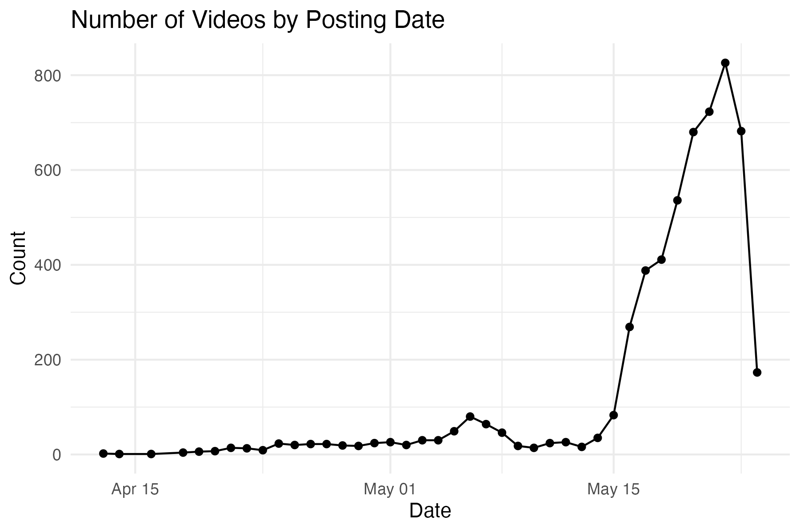
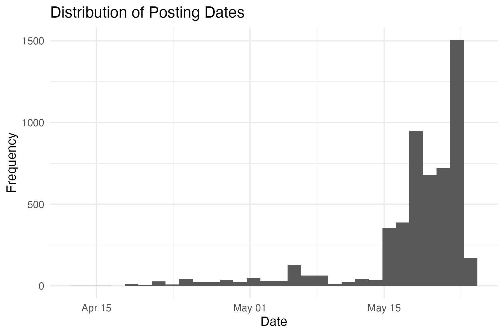
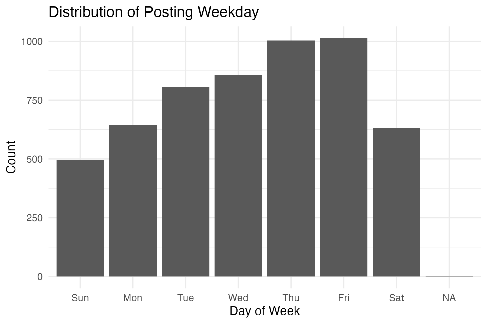
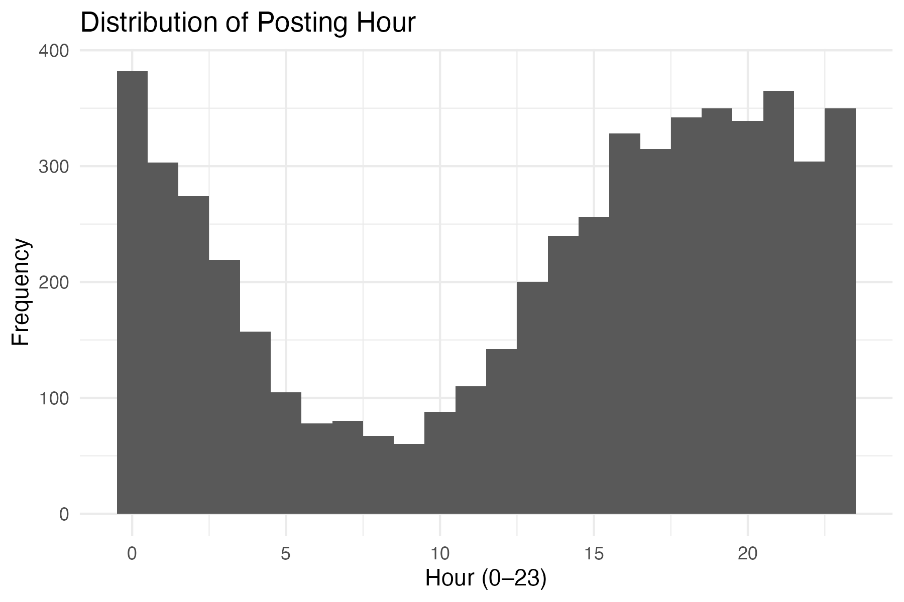
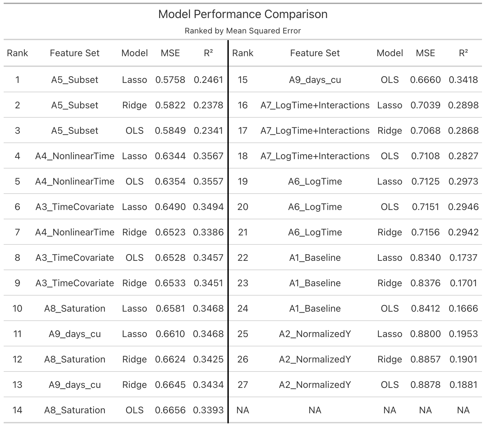
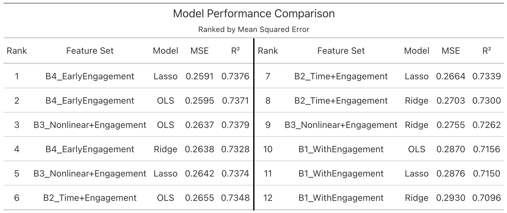
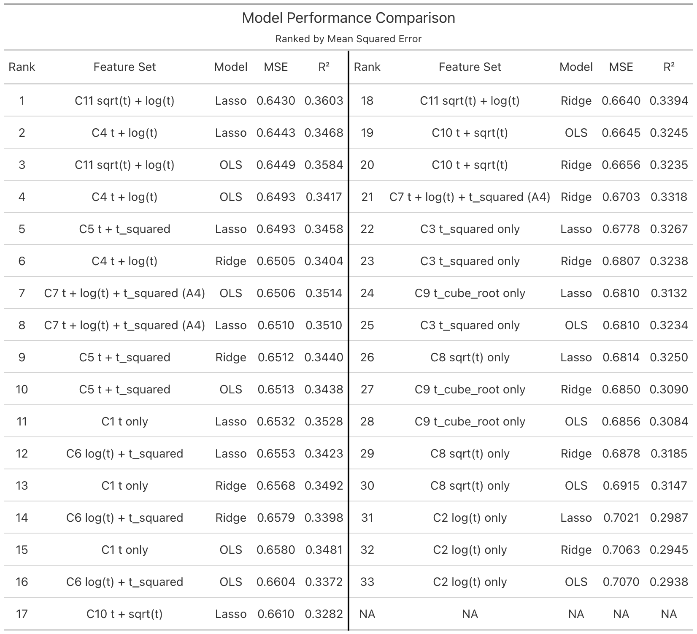
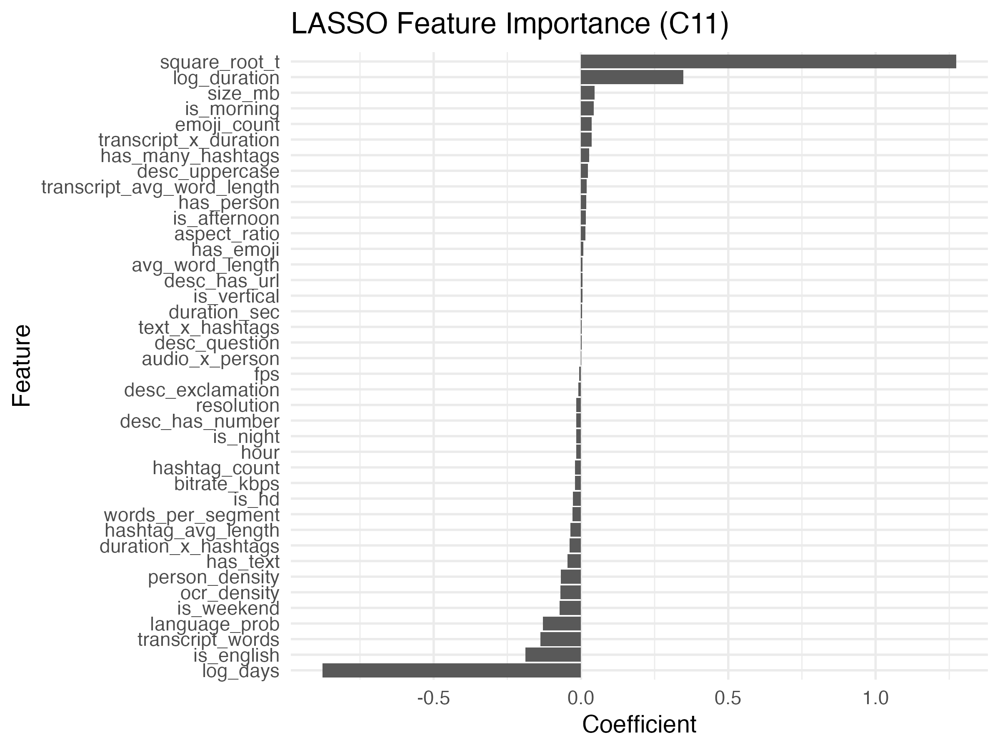
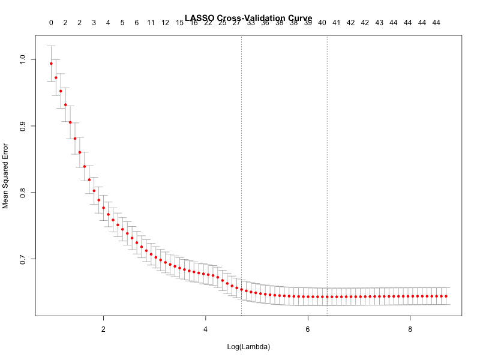
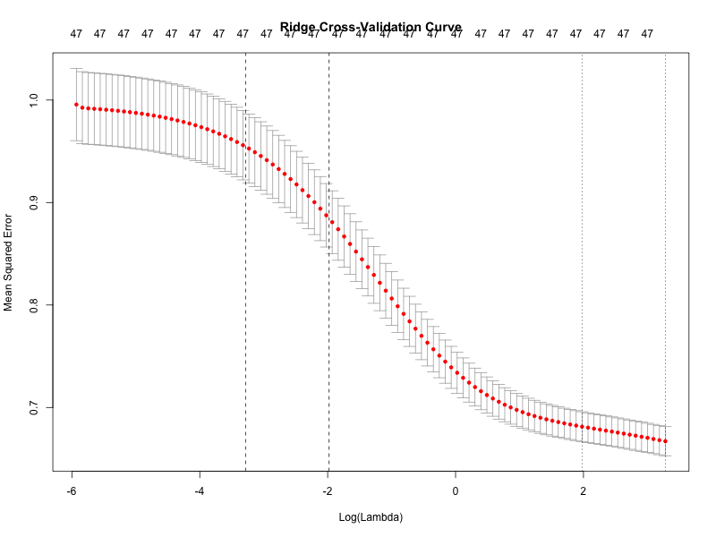

Predictive Modeling of Engagement in Short-Form Social Media: A Comparison of Classical and Regularized Regression Methods
Abstract
This study investigates the effectiveness of classical and regularized regression methods in predicting content exposure in short-form social media. Using a dataset of TikTok videos with associated metadata—such as video duration, hashtag usage, posting characteristics, and extracted content features—we develop predictive models to estimate total view counts as a primary measure of performance.
Given the highly skewed and time-dependent nature of view accumulation, the response variable is modeled on the log scale, and temporal dynamics are incorporated to account for differences in exposure time across videos. Classical linear regression models are compared against regularization-based approaches, including ridge regression and the lasso, to evaluate performance in a high-dimensional and potentially collinear feature space.
Model performance is assessed using cross-validation and out-of-sample error metrics, with emphasis on predictive accuracy, stability, and interpretability. The results provide insight into which modeling approaches are most effective for capturing the drivers of content exposure and highlight the trade-offs between model complexity and generalization performance in social media environments.
Introduction
The rapid growth of short-form social media platforms, particularly TikTok, has fundamentally transformed how content is created, distributed, and consumed. Unlike traditional media environments, where reach is largely determined by established audiences, short-form platforms rely on algorithmic recommendation systems capable of rapidly amplifying content to large and diverse audiences. As a result, understanding the factors that drive content exposure has become an important problem for content creators, marketers, and researchers alike.
Despite widespread interest in social media performance, predicting the success of individual pieces of content remains a challenging task. Outcomes such as total view counts are influenced by a complex combination of factors, including video characteristics (e.g., duration, timing, and hashtag usage), content attributes, and platform-specific dynamics. In addition, these data are often high-dimensional and exhibit substantial multicollinearity, making classical modeling approaches difficult to apply without careful consideration.
This study focuses on the problem of predicting content exposure in short-form video data using metadata derived from TikTok videos. In contrast to preference-based metrics such as likes, view counts are treated as the primary response variable, as they more directly reflect algorithmic distribution and audience reach. To address the highly skewed and time-dependent nature of view accumulation, the response is modeled on the log scale and augmented with temporal features that account for differences in exposure time across videos.
The primary objective of this work is to evaluate and compare the performance of classical linear regression methods with regularized regression techniques, including ridge regression and the lasso, in this setting. Regularization methods are particularly well-suited for high-dimensional problems, where the number of predictors may be large relative to the sample size or where multicollinearity is present. By imposing penalties on model coefficients, these approaches can improve predictive performance while enhancing interpretability through shrinkage and variable selection.
The contributions of this study are threefold. First, we provide an empirical comparison of classical and regularized regression methods for predicting content exposure in short-form social media data. Second, we examine the role of temporal structure in modeling view-based outcomes, highlighting the importance of accounting for exposure time in cross-sectional settings. Third, we identify which types of features—ranging from basic metadata to engineered content attributes—are most informative for predicting performance, and evaluate the trade-offs between model complexity and generalization.
In addition to comparing ordinary least squares, ridge regression, and lasso regression, the analysis evaluates the stability of predictive performance across repeated data splits and contrasts models built using only pre-posting content features with expanded specifications that incorporate post-publication engagement signals. This framework allows for a clearer distinction between features available at the time of posting and those that reflect downstream user interaction, providing insight into both predictive modeling and practical applicability.
Data
Data Source
The data used in this study originate from a publicly available TikTok dataset hosted on Kaggle. According to the dataset description, the records were originally collected via the RapidAPI platform and include metadata on individual videos, their creators, and associated engagement measures.
The dataset contains approximately 7,000 observations and includes variables such as video identifiers, creator usernames, textual descriptions, hashtag information, music attributes, and engagement metrics including likes, comments, shares, and play counts. Timestamp variables describing when videos were posted are also available and play a central role in constructing temporal features used in the analysis.
Because the dataset lacks detailed documentation regarding its sampling methodology, it is treated as a convenience sample of publicly accessible TikTok content rather than a representative sample of platform-wide activity. Accordingly, the goal of this study is not population-level inference, but rather the evaluation of predictive modeling strategies in a realistic, high-dimensional social media setting.
To remain consistent with ethical academic use, only publicly observable metadata and derived features are used in the analysis. Raw video files were used solely for feature extraction and were not redistributed.
Data Collection and Feature Construction
To extend the analytical value of the original dataset, substantial feature engineering and data augmentation were performed.
First, a set of structured features was constructed directly from the original metadata using R. These include temporal variables such as hour of posting, day of week, and time-of-day indicators. Text-based features were derived from video descriptions, including measures of length, punctuation usage, capitalization patterns, and indicators for URLs or numeric content. Hashtag-related variables were also constructed, including counts and indicators for frequently occurring tags. Where available, creator-level attributes were incorporated or transformed into grouped representations.
To further enrich the dataset, video-level data were programmatically retrieved using the video_url field. Approximately 7,000 videos were downloaded and stored locally on a network-attached storage system to support large file handling. A subset of videos could not be processed due to format incompatibilities (e.g., carousel posts) or access limitations, resulting in a slightly reduced sample for the augmented dataset.
The downloaded videos were then processed using a Python-based pipeline to extract audiovisual and textual features. This process required approximately 48 hours of computation. Extracted features include technical characteristics (e.g., duration, resolution, frame rate), audio indicators, and content-based variables derived from automated analysis.
In particular, speech-to-text transcription was performed using a Whisper-based model, producing features such as detected language, transcript length, and segment counts. Optical character recognition (OCR) was applied to extract on-screen text, and additional indicators were constructed to capture the presence of human subjects within videos.
The final dataset therefore combines original metadata, engineered features, and high-dimensional variables extracted directly from video content. This multi-stage pipeline enables a substantially richer representation of short-form media than metadata alone.
Formally, let \(\mathcal{D}_i\) denote the raw data associated with observation \(i\). The feature engineering process defines a mapping
\[ \phi: \mathcal{D}_i \mapsto \mathbf{x}_i \in \mathbb{R}^p, \]
where \(\mathbf{x}_i\) is the resulting \(p\)-dimensional feature vector. This representation emphasizes that predictive modeling operates on a derived feature space, and that the quality of this mapping plays a central role in model performance.
Data Cleaning and Preprocessing
Prior to modeling, several preprocessing steps were performed to ensure data quality and consistency.
Duplicate observations were removed based on unique video identifiers. Variables with limited reliability or incomplete coverage were excluded from analysis, while remaining variables were evaluated for consistency and usability. Following integration of the Python-based feature set, the dataset was restricted to observations for which the full set of engineered features was successfully obtained.
Continuous variables exhibiting strong skewness—particularly engagement-related measures—were evaluated for transformation. Where appropriate, logarithmic transformations were applied to stabilize variance and improve suitability for linear modeling. Predictor variables were standardized when necessary, particularly for regularized regression methods.
Categorical variables were encoded using indicator representations, and care was taken to minimize redundancy and mitigate multicollinearity. These steps resulted in a structured design matrix suitable for regression-based analysis.
Temporal Structure of the Data
The temporal structure of the dataset is an important component of the modeling framework. The primary timestamp used is the create_time variable, representing when each video was posted.
Although the dataset includes a fetch_time variable intended to indicate when data were collected, this field is populated for only a small subset of observations and appears to reflect a single collection time. As a result, the dataset is treated as a cross-sectional snapshot of engagement measured at approximately a common reference time.
Let \(T_i\) denote the posting time of video \(i\), and let \(T_0\) represent the (approximately constant) collection time. The elapsed time since posting can be expressed as
\[ \Delta_i = T_0 - T_i. \]
Because \(T_0\) is not fully observed, \(\Delta_i\) cannot be precisely computed for all observations. However, variation in \(T_i\) implies that videos have had differing exposure durations, which directly affects accumulated engagement.
This has important implications for modeling: observed view counts reflect not only content characteristics but also time available for exposure. Accordingly, temporal features are incorporated into the modeling framework to partially account for this effect.



Outcome Variable Definition
The primary objective of this study is to model and predict content engagement. Accordingly, total view count is used as the primary response variable, as it most directly reflects the reach of a video within the platform’s recommendation system.
Unlike likes, which capture user preference conditional on viewing, views represent exposure and are therefore more appropriate for modeling the distributional dynamics of content.
Due to the highly skewed distribution of view counts, a logarithmic transformation is applied. The response variable is defined as
\[ Y_i = \log(1 + V_i). \]
where \(V_i\) denotes the total number of views for video \(i\).
This transformation reduces the influence of extreme values, stabilizes variance, and improves the suitability of the response variable for linear modeling approaches. All models are trained and evaluated using this transformed outcome.
Statistical Representation of the Data
Let \(n\) denote the number of observations in the final dataset. For each video \(i = 1, \dots, n\), let \(Y_i\) denote the response variable, defined as
\[ Y_i = \log(1 + V_i). \]
Let \(\mathbf{x}_i \in \mathbb{R}^p\) denote the vector of predictor variables associated with observation \(i\), where \(p\) is the number of features after preprocessing and encoding.
The dataset can therefore be represented as a collection of pairs
\[ \{(Y_i, \mathbf{x}_i)\}_{i=1}^n, \]
or equivalently in matrix form as
\[ \mathbf{Y} = \begin{pmatrix} Y_1 \\ Y_2 \\ \vdots \\ Y_n \end{pmatrix} \in \mathbb{R}^n, \quad \mathbf{X} = \begin{pmatrix} \mathbf{x}_1^\top \\ \mathbf{x}_2^\top \\ \vdots \\ \mathbf{x}_n^\top \end{pmatrix} \in \mathbb{R}^{n \times p}. \]
The design matrix \(\mathbf{X}\) includes features derived from metadata, textual content, and video-based extraction processes. These predictors may exhibit high dimensionality and substantial correlation, motivating the use of regularization methods in subsequent modeling.
Primary Modeling Specification
The primary modeling specification uses only predictors available at or prior to the time of posting. This restriction ensures temporal validity and avoids information leakage from post-publication engagement variables.
Accordingly, variables such as observed views, comments, and shares (and functions thereof) are excluded from the primary specification. The resulting model relies on textual, temporal, technical, and content-derived predictors.
A secondary benchmark specification is considered in later sections, incorporating post-publication engagement variables to quantify the extent to which predictive performance improves when such information is available.
Methods
Problem Setup
The objective of this study is to model the relationship between a set of predictor variables and content exposure using regression-based methods.
Let \(Y_i\) denote the response variable for observation \(i\), defined as
\[ Y_i = \log(1 + V_i), \]
where \(V_i\) represents the total number of views.
Let \(\mathbf{x}_i \in \mathbb{R}^p\) denote the corresponding vector of predictor variables. The data are represented in matrix form as
\[ \mathbf{Y} \in \mathbb{R}^n, \qquad \mathbf{X} \in \mathbb{R}^{n \times p}, \]
where \(n\) is the number of observations and \(p\) is the number of predictors.
The goal is to estimate a predictive relationship between \(\mathbf{X}\) and \(\mathbf{Y}\) and to evaluate model performance under out-of-sample assessment.
Model Framework
To systematically evaluate the role of feature availability and temporal structure, the analysis is organized into three groups of model specifications: Model A, Model B, and Model C.
Model A — Content-Only Specifications
Model A represents the primary modeling framework and includes only predictors available at or prior to the time of posting. These consist of:
- Text-based features derived from captions
- Hashtag features
- Posting time indicators
- Technical video attributes
- Content-derived features (e.g., OCR, transcription, audio indicators)
Post-publication engagement variables (e.g., likes, comments, shares, views) are excluded to ensure temporal validity and avoid information leakage.
A sequence of Model A specifications is constructed to evaluate the role of temporal adjustment:
- A1 — Baseline: Content-only predictors with no temporal adjustment
- A2 — Normalized Response: Models views per unit time (views per day)
- A3 — Linear Time Adjustment: Includes elapsed time since posting
- A4 — Nonlinear Time (Primary Model): Includes \(\log(t)\) and \(t^2\)
- A5 — Subset Model: Restricts observations to a selected time window
- A6 — Log-Time Only: Uses \(\log(t)\) as the sole temporal adjustment
- A7 — Log-Time with Interactions: Includes interactions between time and key features
- A8 — Saturation Model: Uses a nonlinear transformation \(1 - e^{-kt}\)
- A9 — Higher-Order Time: Includes cubic time effects
These models allow for a structured comparison of how temporal representations influence predictive performance.
Model B — Engagement-Augmented (Oracle) Specifications
Model B extends Model A by incorporating post-publication engagement variables, including likes, comments, and shares.
These models are not intended to represent realistic pre-posting prediction, but instead serve as benchmark specifications that quantify the predictive value of information observed after publication.
The Model B specifications include:
- B1 — Engagement Only: Adds engagement features to the baseline
- B2 — Time + Engagement: Incorporates temporal covariates
- B3 — Nonlinear Time + Engagement: Combines nonlinear time with engagement variables
- B4 — Early Engagement Model: Approximates early engagement using per-day rates scaled over short time windows
The comparison between Model A and Model B provides insight into how much predictive power is attributable to early engagement signals relative to content features alone.
Model C — Temporal Functional Form Analysis
Model C focuses specifically on the role of time in shaping content exposure. These models isolate and compare different functional forms of time within a consistent feature space.
The specifications include:
- C1–C3: Single-term models using \(t\), \(\log(t)\), and \(t^2\)
- C4–C6: Two-term combinations (e.g., \(t + \log(t)\), \(t + t^2\))
- C7: Full nonlinear specification (equivalent to Model A4)
- C8–C11: Alternative transformations including \(\sqrt{t}\), \(t^{1/3}\), and hybrid forms
These models are designed to better understand the functional relationship between time since posting and accumulated views.
Predictor Selection and Temporal Validity
A central methodological consideration is the distinction between predictors available at posting time and those observed after engagement begins to accumulate.
Model A includes only pre-posting predictors, ensuring temporal validity. In contrast, Model B incorporates post-publication engagement variables to quantify the additional predictive value of such information.
This distinction reflects the difference between a realistic prediction setting and an upper-bound benchmark.
Design Matrix Construction and Standardization
Let \(\mathbf{x}_i = (x_{i1}, \dots, x_{ip})^\top\) denote the feature vector for observation \(i\). Predictors are assembled into a design matrix using numeric transformations, indicator variables, and interaction terms.
For regularized regression methods, predictors are standardized according to
\[ \tilde{x}_{ij} = \frac{x_{ij} - \bar{x}_j}{s_j}, \]
where \(\bar{x}_j\) and \(s_j\) denote the sample mean and standard deviation of predictor \(j\).
This ensures that the penalty is applied uniformly across predictors.
Linear Regression Model
The classical linear regression model is given by
\[ \mathbf{Y} = \mathbf{X}\boldsymbol{\beta} + \boldsymbol{\epsilon}. \]
The ordinary least squares estimator is
\[ \hat{\boldsymbol{\beta}}_{\text{OLS}} = \arg\min_{\boldsymbol{\beta}} \|\mathbf{Y} - \mathbf{X}\boldsymbol{\beta}\|_2^2. \]
OLS serves as a baseline but may become unstable in high-dimensional or correlated settings.
Ridge Regression
Ridge regression introduces an \(\ell_2\) penalty:
\[ \hat{\boldsymbol{\beta}}_{\text{ridge}} = \arg\min_{\boldsymbol{\beta}} \left\{ \|\mathbf{Y} - \mathbf{X}\boldsymbol{\beta}\|_2^2 + \lambda \|\boldsymbol{\beta}\|_2^2 \right\}. \]
This reduces variance and improves stability in the presence of multicollinearity.
Lasso Regression
The lasso introduces an \(\ell_1\) penalty:
\[ \hat{\boldsymbol{\beta}}_{\text{lasso}} = \arg\min_{\boldsymbol{\beta}} \left\{ \|\mathbf{Y} - \mathbf{X}\boldsymbol{\beta}\|_2^2 + \lambda \|\boldsymbol{\beta}\|_1 \right\}. \]
This formulation enables both shrinkage and variable selection by setting some coefficients exactly to zero.
Tuning Parameter Selection
For ridge and lasso regression, the tuning parameter \(\lambda\) is selected using \(K\)-fold cross-validation.
The optimal value is
\[ \hat{\lambda} = \arg\min_{\lambda \in \Lambda} \mathrm{CV}(\lambda), \]
where \(\mathrm{CV}(\lambda)\) denotes the cross-validated prediction error.
Repeated-Split Evaluation
To assess stability, model performance is evaluated across repeated train/test splits.
Let \(B\) denote the number of repetitions. The average mean squared error is
\[ \overline{\mathrm{MSE}} = \frac{1}{B}\sum_{b=1}^B \mathrm{MSE}^{(b)}. \]
This provides a more robust estimate of predictive performance than a single split.
Performance Metrics
Model performance is evaluated using out-of-sample mean squared error:
\[ \mathrm{MSE} = \frac{1}{m} \sum_{i=1}^m (Y_i - \hat{Y}_i)^2, \]
and out-of-sample coefficient of determination:
\[ R^2_{\text{out}} = 1 - \frac{ \sum (Y_i - \hat{Y}_i)^2 }{ \sum (Y_i - \bar{Y}_{\text{test}})^2 }. \]
These metrics evaluate both predictive accuracy and explanatory power.
In addition, lasso-based feature selection is summarized by examining nonzero coefficients and their stability across repeated splits.
Results
Overview of Empirical Analysis
This section presents the empirical results of the predictive modeling framework. The analysis is organized into three model classes: Model A (content-only), Model B (engagement-augmented benchmark), and Model C (temporal functional form analysis).
Model performance is evaluated using out-of-sample mean squared error (MSE) and out-of-sample \(R^2\), averaged across repeated train/test splits. This repeated sampling approach reduces dependence on a single partition and provides more stable estimates of predictive performance.
Model A: Content-Only Predictive Performance
Model A represents the primary modeling framework, using only predictors available at or prior to the time of posting. These include content features, metadata, and engineered covariates, along with temporal variables capturing exposure.
Across all Model A specifications, predictive performance is moderate, with out-of-sample \(R^2\) values ranging from approximately 0.17 to 0.36. This indicates that content-based features explain a meaningful but limited portion of the variation in view counts.
Model A5 achieves the lowest MSE; however, this model is estimated on a restricted subset of the data and is therefore not directly comparable to the full-sample specifications. Its improved performance reflects reduced variance rather than a superior modeling strategy.
Among the fully comparable models, A4 (nonlinear time) provides the best overall performance. This specification includes \(t\), \(\log(t)\), and \(t^2\), and consistently outperforms simpler temporal representations such as linear time or log-time alone.
These results demonstrate that:
- Temporal exposure is a dominant driver of observed views
- The effect of time is inherently nonlinear
- Flexible functional forms substantially improve predictive performance
Across estimation methods, ordinary least squares, ridge regression, and lasso regression produce nearly identical results. This indicates that, in this setting, feature construction is far more important than estimator choice.

Model B: Engagement-Augmented Benchmark
Model B extends the feature set by incorporating post-publication engagement variables, including likes, comments, and shares.
In contrast to Model A, Model B exhibits substantially improved predictive performance. The best-performing specification, B4 (early engagement model), achieves an out-of-sample \(R^2\) exceeding 0.73.
This represents a dramatic increase relative to content-only models and indicates that:
A large portion of the explainable variation in view counts is revealed through early user interaction rather than intrinsic content features alone.
Importantly, Model B should not be interpreted as a realistic prediction model at posting time. Instead, it serves as an upper-bound benchmark, reflecting the predictive power available once the platform and users begin responding to the content.
A key insight is that even approximate early engagement signals (Model B4) provide nearly as much predictive power as full engagement metrics. This suggests that:
Virality is largely determined early in the content lifecycle, and early engagement acts as a strong leading indicator of eventual performance.

Model C: Temporal Functional Form Analysis
Model C isolates the role of time by comparing alternative functional forms of temporal adjustment while holding the remaining feature set fixed.
The results reveal that predictive performance depends strongly on how time is represented. Linear time alone is insufficient, and polynomial specifications provide only partial improvements.
The best-performing specification is Model C11, which combines \(\sqrt{t}\) and \(\log(t)\). This model achieves the lowest MSE among all Model C variants and slightly outperforms the A4 specification.
This finding indicates that:
View accumulation follows a concave growth process
Early exposure contributes disproportionately to total views
Additional time yields diminishing marginal returns
Compared to polynomial terms such as \(t^2\) or \(t^3\), concave transformations like \(\sqrt{t}\) and \(\log(t)\) more naturally capture the lifecycle of content diffusion.
Thus, Model C refines the A4 result by showing that:
The nonlinear effect of time is best represented through concave transformations rather than higher-order polynomials.

Comparison Across Model Classes
Taken together, the results reveal three central patterns:
Content-only prediction is inherently limited
Even the best Model A specifications explain only about 35% of the variation in views, indicating that a substantial portion of the outcome is driven by factors not observable at posting time.Engagement variables dominate predictive performance
Model B achieves \(R^2\) values above 0.70, demonstrating that early user interaction captures a large share of the explainable variation in final views.Temporal modeling is critical
Model C shows that the functional form of time significantly affects predictive accuracy, with concave transformations outperforming both linear and polynomial specifications.
These findings suggest that view counts are driven by a combination of content characteristics, exposure dynamics, and early feedback mechanisms, with temporal and engagement factors playing dominant roles.
Feature Selection via Lasso Regression
Lasso regression was used to identify influential predictors within the best-performing temporal specification (Model C11), with all predictors standardized to ensure comparability.
The results show that temporal variables are the dominant drivers of prediction:
- \(\sqrt{t}\) has a large positive coefficient
- \(\log(t)\) has a large negative coefficient
Together, these terms capture rapid early growth followed by diminishing returns, consistent with the lifecycle interpretation observed in Model C.
Secondary predictors include:
- Video duration (positive association)
- Posting time indicators (e.g., morning vs. weekend effects)
- Text and hashtag features
- Transcript and OCR-derived features
However, the magnitudes of these coefficients are small relative to the temporal terms. This indicates that:
- Content features play a supporting role, while temporal exposure remains the primary determinant of view accumulation

Cross-Validation Diagnostics
The cross-validation curves for ridge and lasso regression illustrate how prediction error varies with the regularization parameter \(\lambda\).
Both curves exhibit relatively flat regions near the optimal tuning parameter, indicating that predictive performance is not highly sensitive to the precise value of \(\lambda\).
This reinforces the broader finding that:
- Differences across estimation methods are small relative to differences in feature construction and model specification.


Key Empirical Findings
The main findings of this study are:
- Content-based features alone provide moderate but limited predictive power
- Temporal exposure is a primary structural driver of observed views
- The effect of time is nonlinear and concave, with strong early growth and diminishing returns
- Early engagement signals dramatically improve predictive performance
- Differences between regression methods are minimal relative to differences in feature construction
Overall, the results indicate that virality is only partially predictable at the time of posting and becomes substantially more predictable once early interaction signals are observed.
Discussion
Interpretation of the Main Findings
The results of this study highlight both the potential and the limitations of predicting social media performance using content-based features alone.
Under the primary content-only specification (Model A), predictive performance is moderate but inherently limited. Even with a rich feature set incorporating textual, temporal, technical, and content-derived variables, the models explain only a portion of the variation in view counts. This indicates that engagement outcomes are not determined solely by observable content characteristics.
A key finding is that temporal exposure plays a central structural role in observed engagement. Incorporating time as a predictor produces substantial improvements in predictive performance, and nonlinear representations of time further enhance model fit. The Model C analysis refines this result by demonstrating that view accumulation follows a concave growth process, characterized by rapid early accumulation and diminishing marginal returns over time. In particular, the combination of \(\sqrt{t}\) and \(\log(t)\) provides the most effective representation of this lifecycle.
At the same time, the comparison between Model A and Model B reveals that early engagement signals dominate predictive power. Once variables such as likes, comments, and shares are included, predictive performance increases dramatically. This suggests that much of the explainable variation in view counts is revealed only after a video begins to circulate, reflecting audience response and platform dynamics rather than intrinsic content properties alone.
Taken together, these results suggest that social media engagement is driven by a combination of content characteristics, exposure dynamics, and early feedback mechanisms, with temporal and engagement effects playing dominant roles.
Methodological Implications
From a methodological perspective, this study highlights the importance of feature construction relative to model selection.
Across all model classes, ordinary least squares, ridge regression, and lasso regression produce nearly identical predictive performance. This indicates that, in this setting, the choice of estimator is less important than the specification of the feature space. In particular, incorporating appropriate temporal structure yields far greater improvements than switching between regression techniques.
At the same time, regularization remains valuable for interpretability. The lasso identifies a coherent subset of predictors, allowing for clearer interpretation of which features carry signal. However, the modest overall predictive power of the content-only models demonstrates that feature selection cannot overcome fundamental limits in the available information.
The comparison between Model A and Model B further reinforces this point. The large performance gap between these model classes indicates that much of the predictable variation in engagement lies in early interaction signals rather than in pre-posting content features. This distinction is critical when interpreting predictive results in social media contexts.
Relation to the Data Structure
The structure of the dataset also plays an important role in interpretation.
The data represent a convenience sample of publicly available TikTok videos, and engagement outcomes are observed at a single point in time rather than tracked longitudinally. As a result, the response variable reflects a cross-sectional snapshot of engagement rather than full lifecycle performance.
This has two implications. First, observed variation in views is partially driven by differences in exposure time. Second, the models should be interpreted as explaining observed engagement at the time of data collection rather than predicting ultimate long-run outcomes.
Limitations
Several limitations should be acknowledged.
First, the dataset is a convenience sample and may not be representative of all TikTok content. The findings therefore apply to the sampled videos rather than the platform as a whole.
Second, engagement outcomes are observed at a single time point, preventing a fully dynamic analysis of growth trajectories.
Third, the analysis does not incorporate user-level or network-level variables such as follower counts, audience size, or recommendation-system exposure, all of which are likely to influence engagement.
Fourth, some engineered features are derived from automated processes such as transcription and OCR, which may introduce measurement error.
Directions for Future Work
Several extensions follow naturally from this work.
A first direction is to incorporate creator-level and audience-level features in order to separate content effects from account effects.
A second direction is to model engagement trajectories longitudinally, allowing for explicit modeling of growth, peak performance, and saturation.
A third direction is to explore alternative modeling frameworks, including nonlinear and tree-based methods, to assess whether additional structure can be captured beyond linear predictors.
Finally, future work could evaluate the stability of results across different datasets, platforms, or content domains.
Contributions
This study makes several contributions to the analysis of short-form social media data.
First, it provides a structured comparison between pre-posting and post-posting prediction, clearly quantifying the difference between content-based predictability and engagement-driven predictability.
Second, it demonstrates that temporal modeling is central to understanding content performance, and shows that concave transformations of time provide a more accurate representation of view accumulation than linear or polynomial forms.
Third, it introduces a systematic framework (Model A, B, and C) for evaluating feature availability, temporal structure, and predictive performance in a unified setting.
Fourth, it shows that feature engineering plays a more important role than estimator choice, with minimal differences observed across OLS, ridge, and lasso once the feature space is properly specified.
Conclusion
This study examined the extent to which content-based features can predict engagement in short-form social media. Using a dataset of TikTok videos enriched with textual, temporal, technical, and video-derived predictors, a series of regression-based models were evaluated under both pre-posting and post-posting conditions.
The results show that content-based predictors alone provide moderate but limited predictive power. While meaningful signal exists, a substantial portion of engagement variability is driven by factors not observable at the time of posting.
At the same time, the analysis demonstrates that temporal exposure plays a central role in shaping observed outcomes. The most effective models capture a concave growth process, reflecting rapid early accumulation and diminishing returns over time.
Finally, the results show that early engagement signals dramatically improve predictive accuracy, indicating that much of a video’s eventual performance is determined shortly after it is released.
Overall, these findings highlight both the promise and the limits of predictive modeling in social media contexts. While statistical methods can extract meaningful structure from content and timing, a full understanding of engagement requires accounting for the dynamic interaction between content, audience response, and platform-level processes.
References
Tibshirani, Robert. (1996). Regression shrinkage and selection via the lasso. Journal of the Royal Statistical Society: Series B.
Hoerl, Arthur E., and Robert W. Kennard. (1970). Ridge regression: Biased estimation for nonorthogonal problems. Technometrics.
Hastie, Trevor, Robert Tibshirani, and Jerome Friedman. (2009). The Elements of Statistical Learning. Springer.
Rencher, Alvin C., and William F. Christensen. (2012). Methods of Multivariate Analysis. Wiley.
Appendix A: Variable Definitions
The following table summarizes the variables used in the analysis.
| Variable | Description |
|---|---|
| likes | Number of likes on the video |
| comments | Number of comments on the video |
| shares | Number of shares |
| emoji_count | Number of emojis present in the caption |
| has_emoji | Indicator (1/0) for presence of at least one emoji |
| hashtag_count | Number of hashtags in the caption |
| probe_success | Indicator for successful metadata extraction |
| duration_sec | Length of the video in seconds |
| size_bytes | File size of the video in bytes |
| bit_rate | Video bit rate |
| width | Video width in pixels |
| height | Video height in pixels |
| audio_present | Indicator for presence of audio |
| whisper_success | Indicator for successful speech transcription |
| language_probability | Confidence score of detected language |
| transcript_char_count | Number of characters in transcript |
| transcript_word_count | Number of words in transcript |
| num_segments | Number of transcript segments |
| ocr_text_present | Indicator for presence of on-screen text |
| ocr_word_count | Number of words detected via OCR |
| ocr_text_frames | Number of frames containing text |
| person_present | Indicator for presence of a person in video |
| person_frames | Number of frames containing a person |
| views_total | Total number of views (combined plays/views) |
| hour | Hour of posting (0–23) |
| Y | Response variable: log(1 + views) |
| log_likes | Log-transformed likes |
| log_comments | Log-transformed comments |
| log_shares | Log-transformed shares |
| log_views | Log-transformed views |
| like_to_view | Ratio of likes to views |
| comment_to_like | Ratio of comments to likes |
| share_to_like | Ratio of shares to likes |
| engagement_total | Total engagement (likes + comments + shares) |
| log_engagement_total | Log-transformed total engagement |
| desc_length | Length of caption (characters) |
| desc_word_count | Number of words in caption |
| desc_uppercase | Count of uppercase letters in caption |
| desc_exclamation | Count of exclamation marks |
| desc_question | Count of question marks |
| desc_has_number | Indicator for presence of numbers in caption |
| desc_has_url | Indicator for presence of URL |
| avg_word_length | Average word length in caption |
| hashtag_chars | Total number of characters in hashtags |
| hashtag_avg_length | Average hashtag length |
| has_many_hashtags | Indicator for ≥ 5 hashtags |
| has_few_hashtags | Indicator for ≤ 2 hashtags |
| is_weekend | Indicator for weekend posting |
| is_night | Indicator for night posting |
| is_morning | Indicator for morning posting |
| is_afternoon | Indicator for afternoon posting |
| is_evening | Indicator for evening posting |
| log_duration | Log-transformed video duration |
| resolution | Total pixel count (width × height) |
| aspect_ratio | Width-to-height ratio |
| bitrate_kbps | Bit rate in kilobits per second |
| size_mb | File size in megabytes |
| fps | Frames per second |
| is_hd | Indicator for HD resolution |
| is_vertical | Indicator for vertical video |
| has_audio | Indicator for audio presence |
| has_voice | Indicator for detected speech |
| transcript_chars | Number of transcript characters |
| transcript_words | Number of transcript words |
| transcript_avg_word_length | Average word length in transcript |
| words_per_segment | Average words per transcript segment |
| has_text | Indicator for OCR-detected text |
| ocr_density | OCR words per frame |
| has_person | Indicator for detected person |
| person_density | Proportion of frames with a person |
| is_english | Indicator for English language |
| language_prob | Language detection confidence |
| duration_x_hashtags | Interaction: duration × hashtag count |
| text_x_duration | Interaction: caption length × duration |
| transcript_x_duration | Interaction: transcript words × duration |
| audio_x_person | Interaction: audio presence × person presence |
| text_x_hashtags | Interaction: caption words × hashtag count |
Appendix B: Code Availability
The full data processing and modeling codebase consists of several thousand lines of R and Python code and is available upon request.